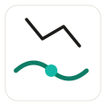
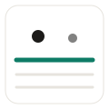
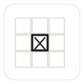

风格方向：非写实 / 示意，抽象几何即可，不依赖任何实景照片。
语言：绿线（#0E7C66）= 标准做法；墨线（#1C1B19）= 缺陷 / 问题；青点（#14B8A6）= AI 已学会。
空间定位感由 7×6 矩阵承载，不强制画户型图。

水平水管（绿）+ 斜向电线（墨）交叉，交叉点为节点焦点。示意"水电路由"，非写实。

顶部落点（墨）= 水；中部实线（绿）= 防水层；下方虚线层 = 保护层。示意"隔水层"。

瓷砖网格，其中一块以墨线加重 + 叉号 = 空鼓 / 缺损缺陷。示意"铺贴质量"。